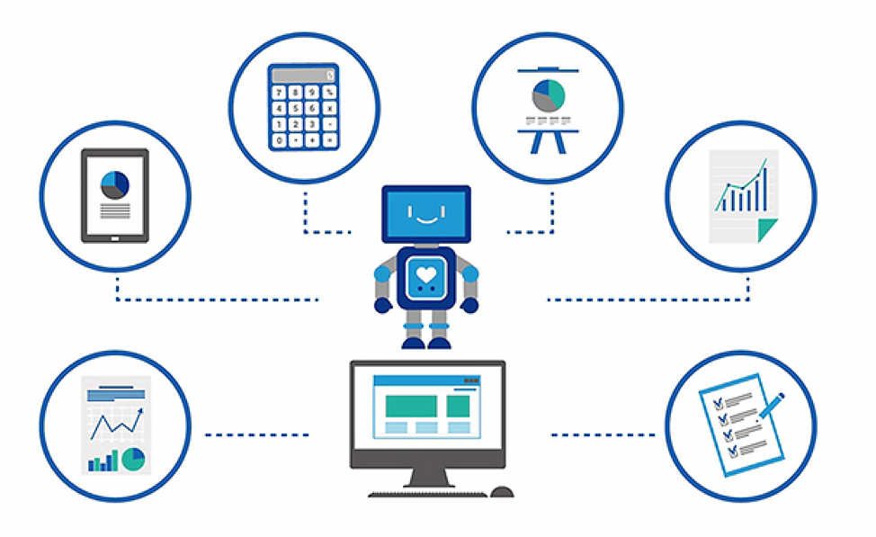

Apa Fungsi RPA ?
RPA Aplikasi yang meniru tindakan manusia dalam berinteraksi dengan Komputer
RPA mengoperasikan aplikasi apapun dengan Antarmuka Pengguna
Mengolah data dalam format terstruktur
Bekerja secara Terus menerus
RPA memiliki akurasi tinggi

Proses apa yang dapat di otomasi oleh RPA ?
Proses yang sangat manual dan berulang
Ini adalah proses volume transaksi tinggi, proses yang sangat sering berjalan harian & mingguan, bukan bulanan atau tahunan yang melibatkan pekerjaan manual yang tinggi atau pekerjaan yang rentan terhadap kesalahan manusia.
Proses berbasis aturan
Kegiatan dengan instruksi pemrosesan yang jelas dengan pengambilan keputusan berdasarkan aturan standar dan prediktif.
Proses apa yang harus di otomasi oleh RPA ?
Aktivitas dengan jumlah skenario variasi rendah yang ada dalam proses mengarah ke prosedur penanganan yang berbeda.
Proses dengan volume transaksi tinggi dan frekuensi tinggi.
Proses dipicu oleh input standar dan konsisten. Inputan ini harus dalam jenis inputan yang dapat dibaca seperti Excel, Word, email, xml, PPT, PDF
yang dapat dibaca, dll. Proses yang dipicu oleh jenis inputan yang tidak dapat dibaca seperti gambar yang dipindai tanpa OCR tidak dibuang ke otomatisasi.
Proses-proses yang dapat memberikan penghematan dalam hal upaya kerja manusia dari minimal 2 karyawan penuh waktu atau FTE.
Proses yang cenderung terdokumentasi dengan baik, stabil & dapat diprediksi dengan biaya operasional yang terkenal.